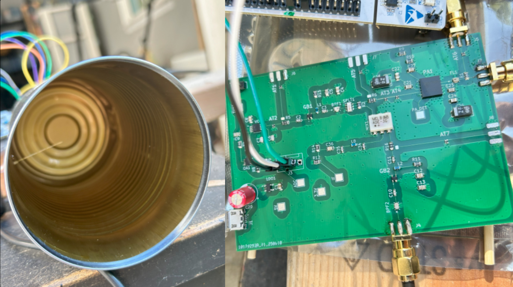
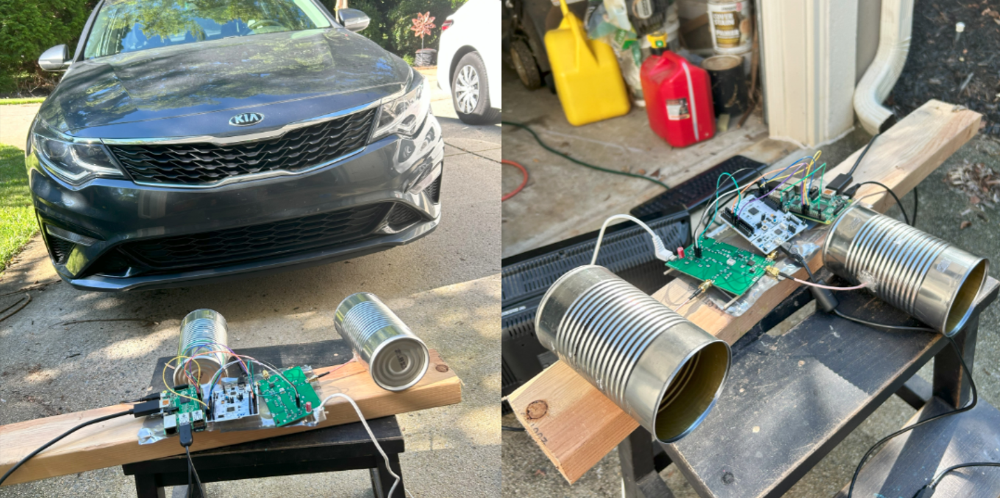
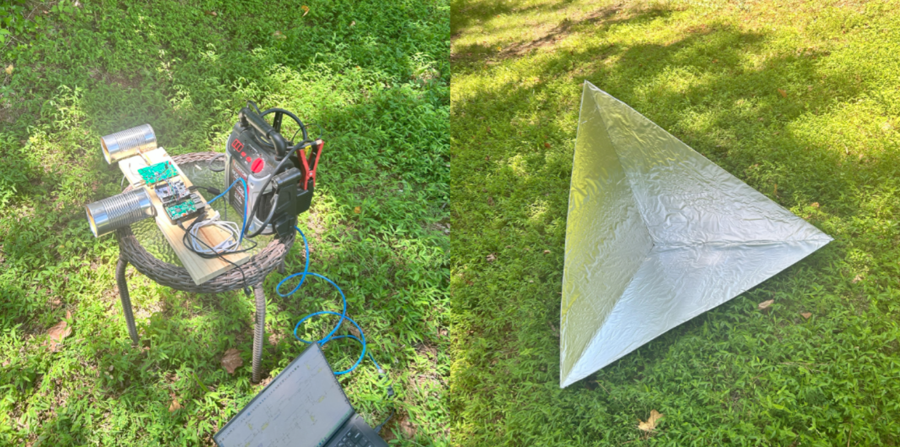

Planning
I wanted to learn more about RF design and how radars work, so I decided to design a radar system. I was able to accomplish this, detecting targets at over 80 ft, for under $100 (including parts and PCB fab). I wanted to be able to detect range, but not have to worry about pulses, so I decided to make a continuous wave radar, with frequency modulation (FMCW). For code and design files, see the GitHub repo.

The block diagram shows my high level design and power estimates. I am using a microcontroller to generate a ramp signal for the VCO, allowing for programmable frequency sweeps. I am using a Raspberry Pi (which I already had) to run the user interface and signal processing program. I am also using homemade cantennas. I used this block diagram to help me check part specs, and to make sure I would be within FCC limits. I chose to use the 2.4GHz ISM band because parts should be easy to find.

I designed the PCB in KiCAD. I used a 4 layer design. I added many configurable SMA taps and test pads for ease of debugging. In retrospect, I should have used test hooks instead of pads, and also added an LED to indicate power. I am using micro USB for power, SMA edge mount for coax connections, and soldered jumper wires for interfacing with the microcontroller. I switched the LNA for another gain block to limit small pitch QFN parts since I would be assembling by hand.
Assembly/Development
I used the STM32 F446RE Nucleo board for my microcontroller. It has an onboard DAC and ADC. I programmed it in C, setting up a double buffering arrangement with DMA to fill and empty the buffer using ADC and SPI peripherals. I also make a static buffer and send it to the DAC to generate the triangle wave for input to the VCO.
I use GT's Hive makerspace for assembly. I used their laser cutters to cut a mylar stencil. All but the op amp and VCO footprints came out right. I used the reflow oven to solder most of the SMD components. I soldered the 0.65mm pitch op amp and VCO by hand, since their footprints melted together in the stencil. Then I soldered THT components and SMA connectors to the TX, RX, and main TX test tap locations (I didn't want to hurt the signal analyser with the real TX signal). I verified my design by checking the power rails and the TX tap using a DMM and signal analyzer.
Additionally, I found cans that were the right dimensions to serve as a waveguide for 2.4GHz. Then I stripped some coax jumpers and drilled holes in the cans. I was able to use the Hive's VNA to tune my cantenna's S11 for my band before soldering.
Testing
Test Setup

I first tested using a car as a target to verify functionality. I used a monitor, keyboard, and mouse for the Pi, plus extension cords and USB adapters for power. By backing the car up then going forward I was succesfully able to see a track in the spectrogram.
You can see that everything is at multiples of about ~0.6 kHz, which is the frequency of my modulating triangle wave. This is because in the initial FFT program on the Pi, the window size was larger than chirp length. Since the beat frequency switches sign as the slope of the ramp switches sign, the signal will be periodic, with the same period as the triangle wave (for a stationary target). In other words, the range resolution of an FMCW radar is only determined by the chirp bandwidth, but in effect I was trying to artificially increase the resolution with a wider FFT window (which doesn't actually gain any more resolution).
Now that I knew it worked, I built a corner reflector for a target, bought an adapter to VNC into the pi from my laptop, set the boards up to be used with a battery, and secured the setup to a board. (I also realized that the device cuts out nearby bluetooth devices when it's on)
To see how far it could detect my reflector, I went to an open field. I first took a measurement with no targets to act as a baseline, then took a measurement with me holding the reflector and walking away.
Results
For details of how I made these plots, see the "sp" folder here.
Range vs Time
You can see that once I fixed the window length to match the chirp length, the spectrum looks more continuous. I plotted z scores relative to the baseline measurement in order to remove the background noise, then added some thresholds to clean it up. You can see that in the first picture (even with poor reflector alignment due to me walking), the track extends to about 25 m (82 ft) before dropping out.
Range vs Velocity over time
Then, I did a 2D FFT to get Range-Doppler plots. This was very sensitive to chirp alignment, and in the future I would add a trigger signal to tell me when chirps are starting. However, for now I made a software based solution that detected the chirps instead. I subtracted the averages and added thresholds to remove the 0 velocity leakage signals. You can see the motion in the range vs time plot clearly depicted as the target moves out to a positive velocity then stays there as it moves away.